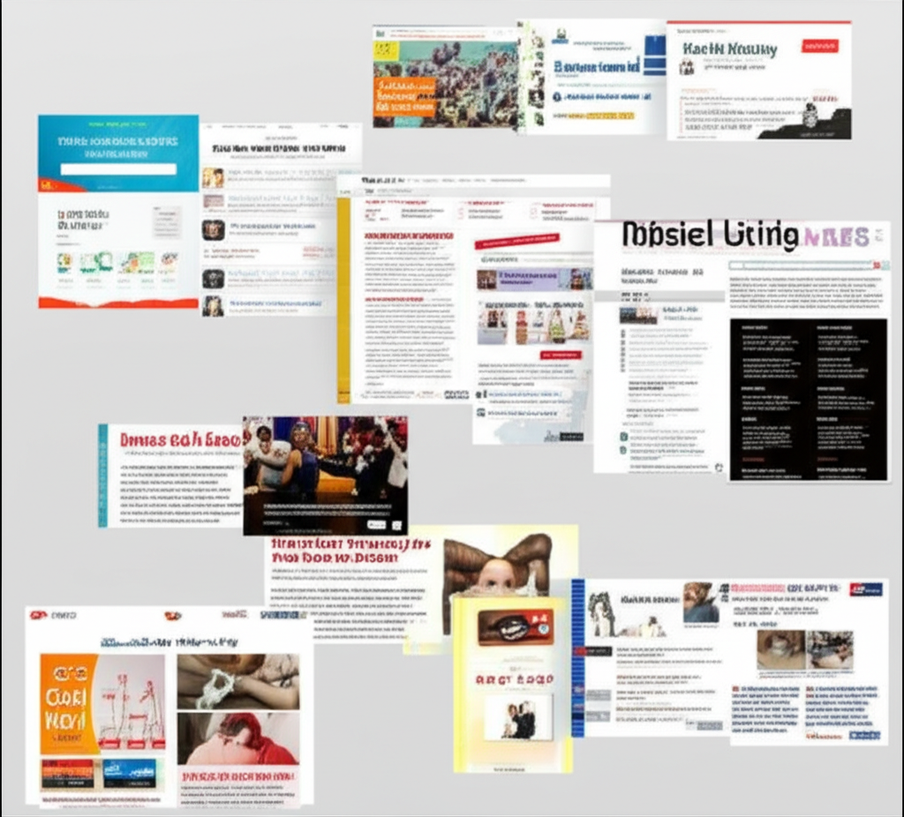

# 今日新聞重點摘要
## 引言
今日新聞涵蓋範圍廣泛，從台灣本土新聞、國際政治、健康醫療，到中國大陸的體重管理推廣等都有涉及。其中，台灣新聞聚焦在網路新聞媒體的發展、潛艦海測整備進度，以及母親節前後的健康議題推廣。國際方面，則關注美國反制中國打壓台灣國際地位的法案。健康醫療領域，則強調肥胖與心血管疾病的關聯，以及體重管理的重要性。
## 主體內容
### 第一點：台灣新聞媒體動態與焦點
NOWnews今日新聞作為台灣第一個網路原生新聞網站，持續在數位媒體領域扮演領導角色。此外，南投新聞的社群平台亦受到關注，但對商業訊息有所限制。天下雜誌則聚焦於台灣經濟議題，例如台幣升值可能造成的影響。中央社則關注台灣自製潛艦「海鯤號」的最新進度，進入海測前的最後整備階段，但仍有待釐清的技術問題。
### 第二點：健康醫療與體重管理
多則新聞強調健康醫療與體重管理的重要性。成大醫院與台灣肥胖醫學會合作，提倡在母親節期間關心母親的腰圍，藉此提醒肥胖可能增加心血管疾病的風險，並鼓勵減重。新聞中提及肥胖不只是外觀問題，更是一種慢性病，需要積極治療。中國大陸的寶雞市也在推廣全民體重管理，鼓勵市民透過運動保持健康。
### 第三點：國際政治與台灣地位
天下雜誌報導美國聯邦眾議院通過法案，旨在反制中國以任何方式打壓台灣國際地位。此新聞顯示國際社會對於台灣國際空間的關注，以及對抗中國壓力的決心。這也反映出台灣在國際社會中面臨的挑戰，以及爭取更多國際支持的重要性。
## 結論
今日新聞摘要呈現了多面向的資訊，從台灣本土的媒體發展、健康議題，到國際政治的角力，皆反映了當前社會關注的焦點。尤其健康醫療與體重管理的推廣，提醒人們重視自身健康，而國際政治局勢則凸顯了台灣在國際舞台上所面臨的挑戰。